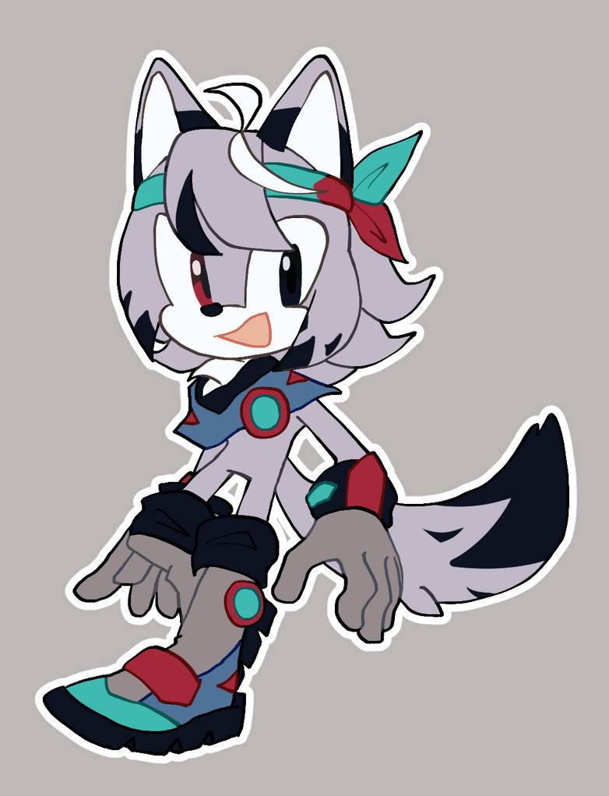

Elegy
any pronouns | jackal | mercenary

art and design by r0ruii on deviantart!
The protagonist. Elegy is a young mercenary from the mountains, seeking the Hope Shards; a collection of fragments of a gem that when brought together, grant wishes to the pure of heart. Outgoing and cheerful, with a snarky side; and known to many as the "Wayward Elegy" because he never stays in one place long.
This box contains a fun fact or quote. That's a fun fact!